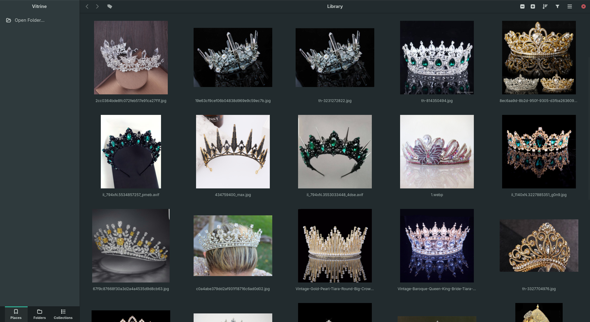
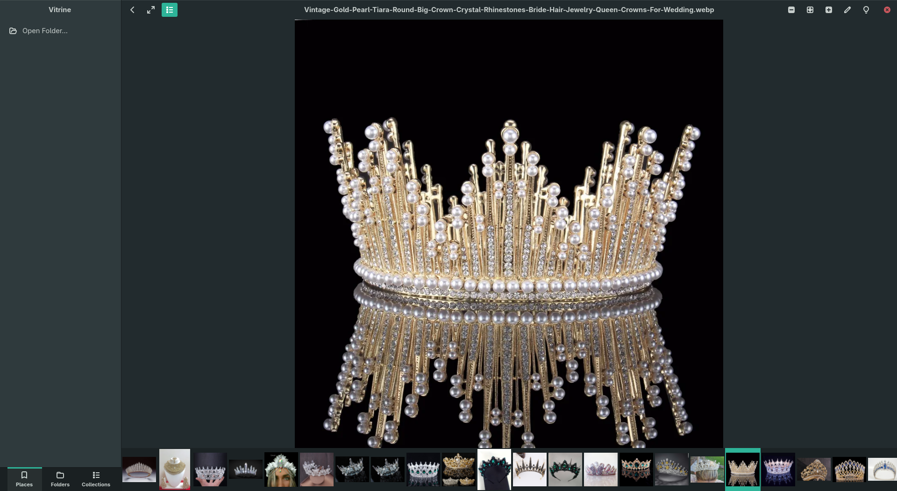
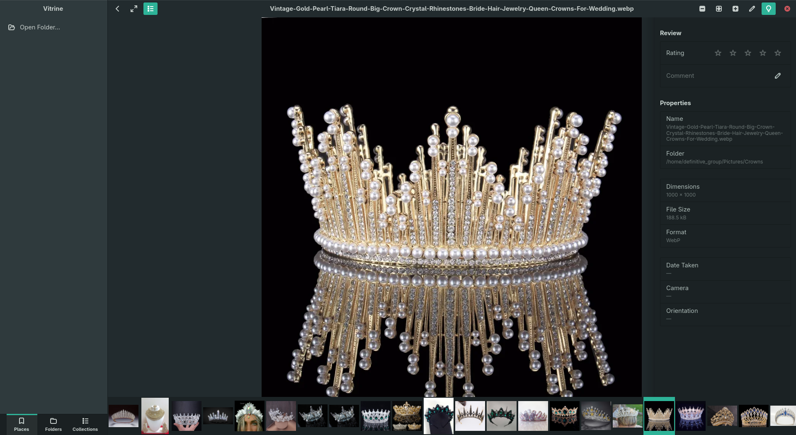
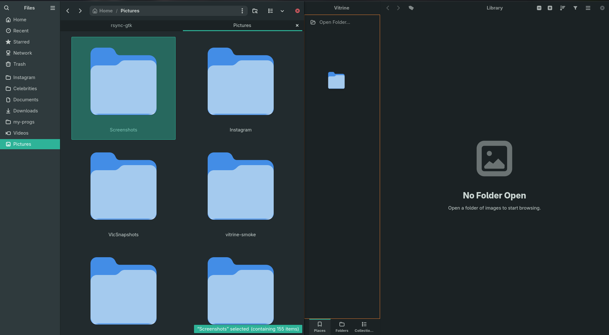
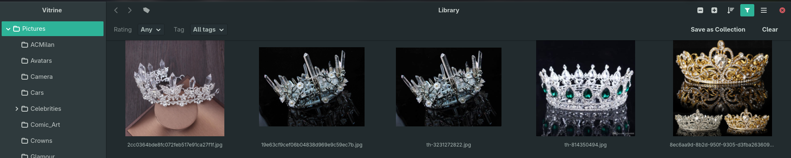
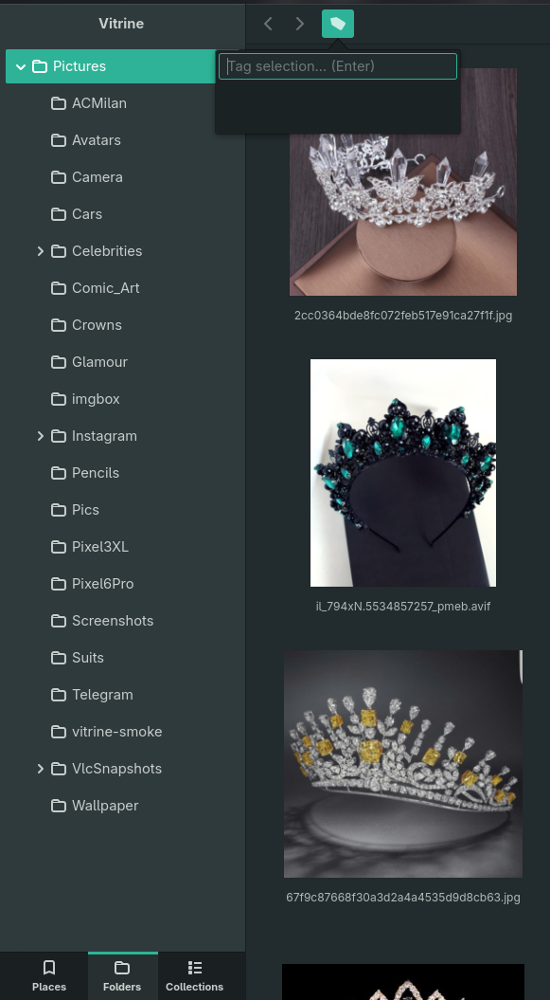

A fast, focused, catalog-aware image browser & reviewer for GNOME.
Browse images that happen to be files — Loupe's viewer, Nautilus's grid and selection model, and a tag/catalog layer keyed to survive gallery-dl renames. Rate, comment, tag, collect, and de-duplicate; nothing gets lost when files move.

The viewer done right, the grid done right, and the catalog layer nobody else has.
| Vitrine | Loupe | Nautilus | gThumb | |
|---|---|---|---|---|
| Virtualized image grid | Yes | No | Yes | Yes |
| Real viewer + filmstrip | Yes | Yes | No | Yes |
| Tags · ratings · collections | Yes | No | No | Yes |
| Survives renames & moves | Yes | — | — | No |
| Find duplicates (exact + near) | Yes | No | No | Partial |
| First-class AVIF / JXL / HEIF | Yes | Yes | Yes | Partial |
v1 is feature-complete.
Virtualized grid with rubber-band selection, adjustable thumbnails, and bounded caches that stay flat on 27k-image folders. Reuses GNOME's shared thumbnail cache.
AVIF, JXL, HEIF, and the classics via glycin — color-managed, EXIF-oriented, decoded in sandboxed subprocesses. Sharper than gdk-pixbuf thumbnails.
Fit / zoom / pan / 100%, arrow-key navigation, a synced filmstrip, and a live properties panel (dimensions, camera, date, format).
0–5 star ratings (with keyboard shortcuts and thumbnail overlays), free-text comments, and tags you apply to a whole selection at once.
Hand-curated catalogs (drag images in, reorder) and smart collections — a saved filter that keeps itself up to date.
A background SQLite catalog keyed by BLAKE3 content hash. Move or rename a file and its tags, rating, comment, and collection memberships follow the bytes.
Exact (byte-identical) and near (perceptual-hash) clustering, with a reclaimable-space readout and one-click "keep the largest, trash the rest".
A switchable sidebar — bookmarks, a folder tree, and collections — plus Back/Forward history and a filter bar.
Export XMP sidecars (xmp:Rating / dc:description / dc:subject) so digiKam, darktable, Lightroom, and XnView read your ratings, comments, and tags. Originals are never rewritten.
The viewer, the review layer, and the edit card — all in one window.





v1 shipped. Next up:
.xmp for other tools.A Flatpak bundle on GitHub Releases — not Flathub. The GNOME runtime comes from Flathub automatically.
# Download Vitrine.flatpak from the latest release, then:
flatpak install --user ./Vitrine.flatpak
flatpak run io.github.superuser_miguel.VitrineNotes from building it.
A hands-on tour of Flatpak's document portal — the FUSE mount, the D-Bus registry, directory grants, and the three states a sandboxed app has to tell apart. With numbers from a real 193,000-file library.
A debug log that couldn't see its own bugs, a tag menu that got slower the more you used it, Flatpak portal paths that aren't paths — and the diagnoses that were confidently wrong.
Find Duplicates reported 41,727 duplicates that mostly weren't. Sandbox path aliases, a trash button that lied, two five-minute experiments — and why "duplicate" turned out to be a product decision with a one-field fix.
GNOME 48+ · a Rust toolchain · blueprint-compiler.
# Flatpak (recommended)
flatpak-builder --user --install --force-clean build-dir \
build-aux/io.github.superuser_miguel.Vitrine.yml
flatpak run io.github.superuser_miguel.Vitrine
# Or a plain cargo dev build
cargo run -p vitrine-app